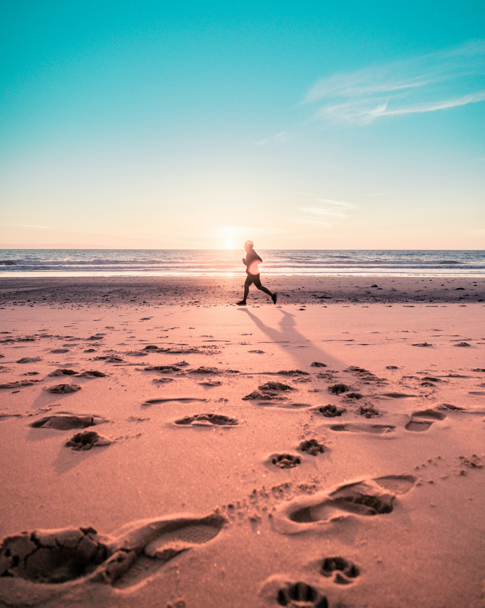

Run beyond travel
여행의 한계를 넘어, 새로운 러닝의 문화를 만들다
What is a RunTrip
단순한 런닝이 아닌, 여행지를 달리며 여행지의 공기를 온몸으로 느끼는 러닝 여행으로,
해외 마라톤 참가부터 국내 러닝 투어, 현지 크루와 함께하는 커뮤니티형 러닝까지
여러 형태로 이어지는 여행형 액티비티입니다.
단순한 운동을 넘어 여행의 감성과 러닝의 에너지를 동시에 느끼게
합니다.
Runtrip Experience
What Makes RunTrip Special
-

색다른 여행 경험
단순한 달리기가 아닌,
여행의 에너지를 온몸으로 느끼는 새로운 경험.
런트립은 평범한 여정을 특별한 경험으로 바꿉니다. -
함께 달리는 즐거움
혼자가 아닌 함께 달리며,
같은 리듬으로 순간을 나누는 시간
런트립은 낯선 도시도 함께 뛰는 추억으로 바꿉니다. -
여행지마다 펼쳐지는 러닝 풍경
도시마다 다른 길 위에서,
아침과 노을, 야경까지 담아내는 러닝
런트립은 한 코스를 하나의 여행 장면으로 남깁니다.
RUNPICK ROLE
What RunPick Does

모아 보여줍니다
여러 주최사의 러닝트립을 한곳에 모아 한눈에 보실 수 있게 소개합니다

모아 보여줍니다
여러 주최사의 러닝트립을 한곳에 모아 한눈에 보실 수 있게 소개합니다

모아 보여줍니다
여러 주최사의 러닝트립을 한곳에 모아 한눈에 보실 수 있게 소개합니다
RUNPICK VISION